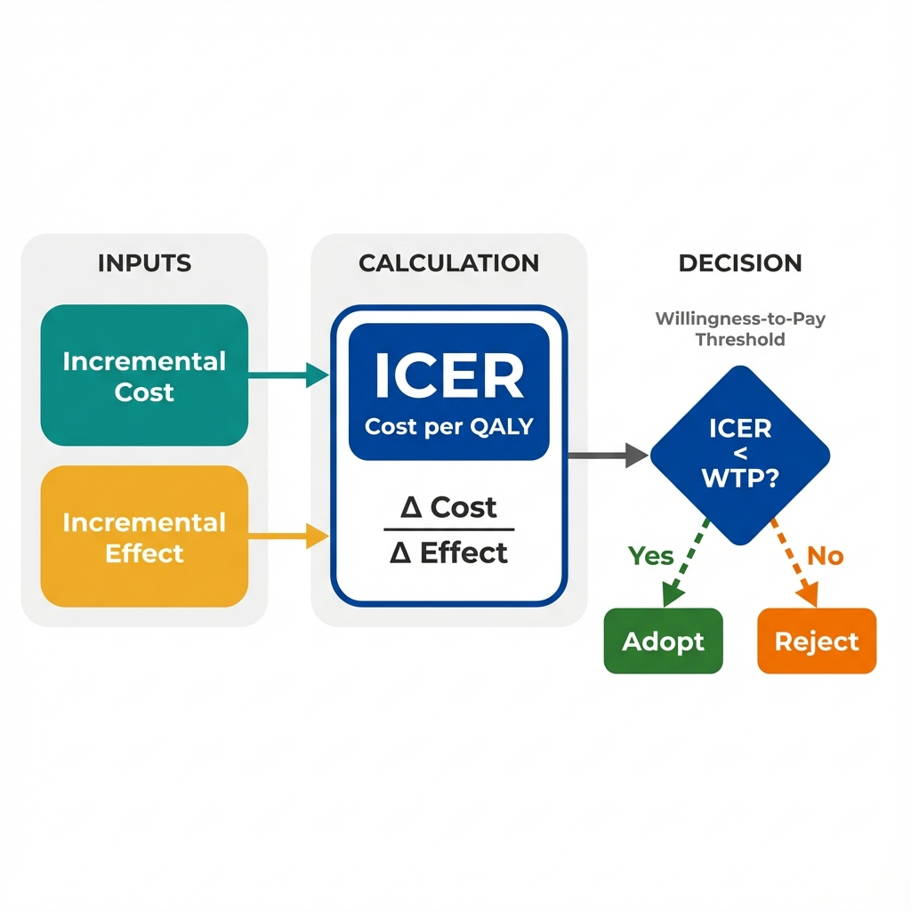

The Data
A county health department is choosing between two diabetes prevention programs. Both programs reduce diabetes incidence, but they differ in costs and effects. Which should they fund? (Data are simulated for illustration.)
Comparing Two Diabetes Prevention Programs
| Metric | Standard Care | Program A (Lifestyle) | Program B (Medication) |
|---|---|---|---|
| Annual Cost per Person | $500 | $2,800 | $4,200 |
| QALYs Gained (10 years) | 8.2 | 8.9 | 9.1 |
| Diabetes Cases Prevented | -- | 28 per 100 | 32 per 100 |
| Program Components | Routine monitoring | Diet, exercise, coaching | Metformin + monitoring |
QALY (Quality-Adjusted Life Year): A measure that combines length of life with quality of life. One QALY equals one year of life in perfect health. A year lived with chronic illness might count as 0.7 QALYs.
Next: How do we compare programs that differ in both costs and effects? We need a ratio that expresses value: the cost per unit of health gained.
Calculating the ICER
The Incremental Cost-Effectiveness Ratio (ICER) answers a specific question: How much additional cost does it take to gain one additional unit of health (usually a QALY)?
Program A vs Standard Care
Program B vs Standard Care
Next: We know Program A has a lower ICER. But is $3,286 per QALY a good deal? How do decision-makers decide what's "worth it"?
Interpreting the ICER
An ICER alone is meaningless without context. We need a benchmark: how much is society willing to pay for one additional year of healthy life? This is called the willingness-to-pay (WTP) threshold.
Cost-Effective
Not Cost-Effective
Common WTP Thresholds
Different countries and organizations use different thresholds. These reflect societal values and budget constraints.
- United States: $50,000 - $150,000 per QALY (informal, varies by context)
- United Kingdom (NICE): ~$30,000 - $45,000 per QALY (explicit threshold)
- World Health Organization: 1-3x GDP per capita as a reference point
Important: These thresholds represent opportunity cost. Money spent on one program cannot be spent on another. A threshold of $50,000/QALY implies we could typically produce one QALY for $50,000 through other health investments.
Next: The ICER gives us a number, but real-world decisions are more complex. How do we visualize the full landscape of cost-effectiveness trade-offs?
The Cost-Effectiveness Plane
The CE plane plots incremental costs (y-axis) against incremental effects (x-axis). This visualization reveals four distinct scenarios, each requiring different decision logic.
Next: What are the key lessons? How does the ICER transform the way economists think about program effectiveness?
Key Insight
The ICER transforms program evaluation from "Does it work?" to "Is it worth it?" This shift recognizes that health budgets are finite and every dollar has an opportunity cost.

The ICER translates clinical effectiveness into economic value by expressing health gains in terms of the resources required to achieve them.
Questions Economists Ask That Others Might Not
Key Takeaway
Effectiveness is not the same as value. A program can be highly effective yet not cost-effective if it consumes resources that could produce more health elsewhere. The ICER forces us to think in terms of health produced per dollar spent, not just health produced. This is what economists mean by efficiency: maximizing total health outcomes within budget constraints. Every funding decision is also a decision not to fund something else.